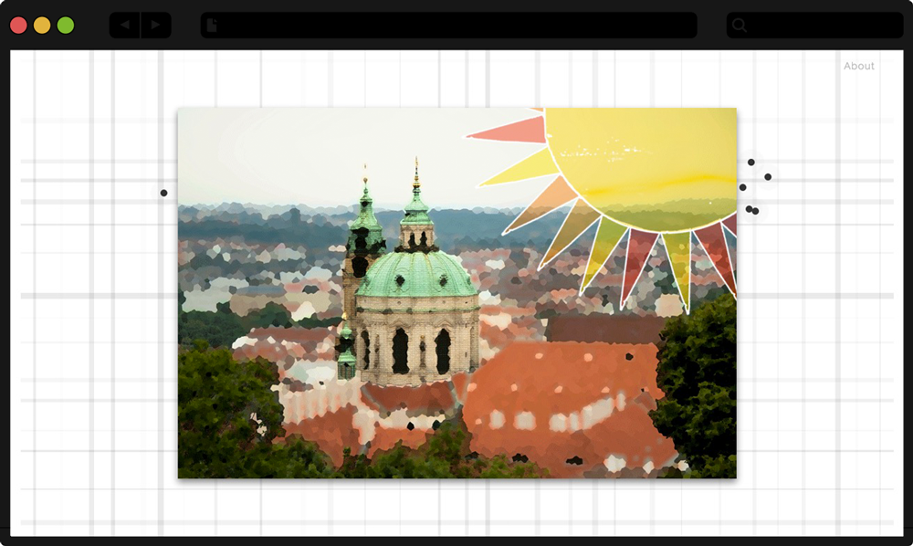
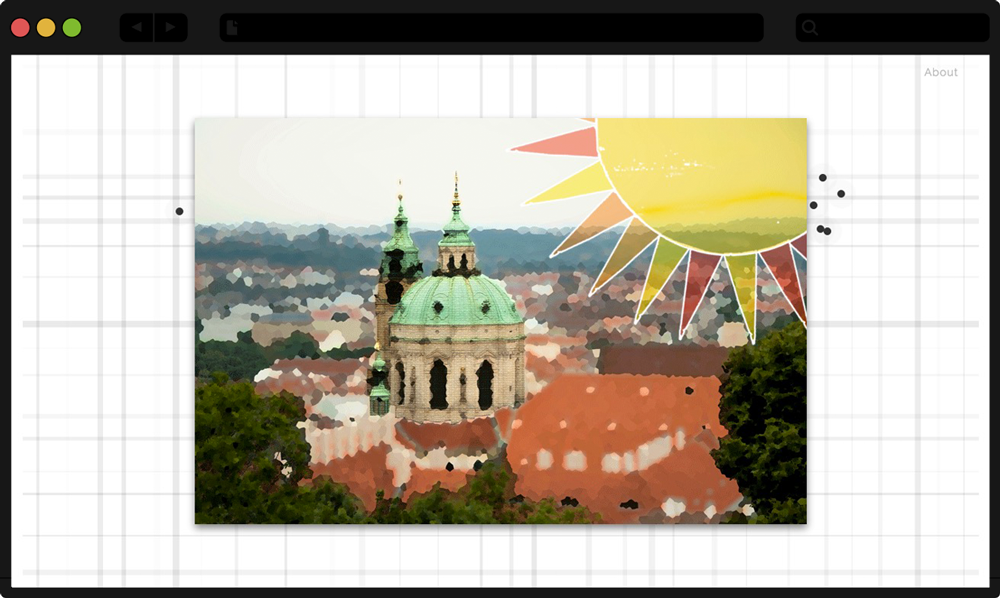

Image x City
View Website View WebsiteMy Contributions
Independent project: Web Design & Development
Technologies
HTML · CSS · JavaScript · Paper.js · Photoshop · Lightroom
Description
This is a website presenting the “personalities” of different cities. I use images(static or animated) to present my feeling of cities vividly and visually. And I will organize these images based on geographical locations of the cities they present. The path of user experience will be from minimalism to surprise. The users could explore and feel the diversity of cities in this space.
Design Highlights
Remix to Make New Things. I combine photos and some abstract artistic elements (such as line, shape, color, symbol and so on) together to describe different cities. Even though I did not use anything new, I really made new things from them. I photoshopped my old photos, combined them together and added colors or patterns if necessary. I put lots of pieces from different photos in to one image, and make it ordered and balanced. For example, Picture 1 is how Beijing looks like in my mind. I put the red wall of ancient architecture, the neon light of downtown, and silhouette of landmark buildings together, which could present both the modern part and historical value of Beijing.
New Media and Traditional Media. I not only build the website, but also print my photos as postcards. Because I believe both new media and traditional media are super improtant. The website could present my idea without any time or distance limitation, but people could not touch the artwork in a website, or feel the texture of the artwork in a mobile device. I hope when people hold these postcards in their hands they could have a different feeling from watching them on the screen.

Surprise behind Minimalism. This interactive website is a space for people to “explore” these cities. I hope people could get surprise and have a wonderful experience in my website. I made the interface as minimal as possible. But I add some effects when mouse is hovering, and add animation to statics images. As people interact with the website, they would easily find that it is more than what they see at the very beginning. People could find something new and interesting, and they could keep engaged in this space.
 
